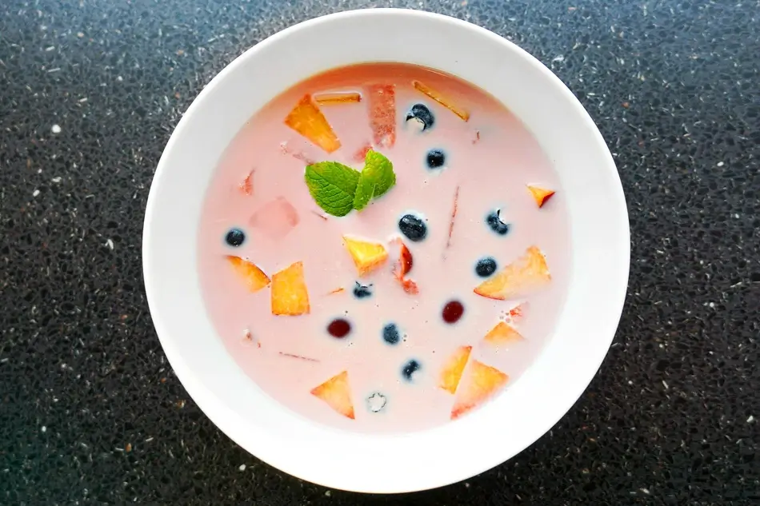

Fruit soup

Strange though it may seem, in Hungary fruit soup is eaten as a soup, not as a dessert.
It's best to make the soup with various fruits e.g. cherry, sour cherry, apple, plum or strawberry.
Ingridients:
- 3 apples, peeled and diced
- 3 handfuls of sour cherries
- pinch of salt
- 1-2 tbsp sugar
- 2-3 whole cloves
- 1/4 tsp vanilla extract
- zest of a half lemon
- 1 tbsp cornstarch
- 200 ml (~3/4 cup) whipping cream
- 1 egg yolk
Steps:
- Place the fruits in a pot, pour in water, just enough to cover them.
- Add cloves, lemon zest, vanilla, salt and sugar, bring it to a gentle boil, and simmer for 5 minutes.
- In a small bowl whisk together cornstarch and a half cup of water. No lumps should remain in the mixture.
- Pour it into the soup and stir. Cook for further 1 minute. Meanwhile whisk together the whipping cream and the egg yolk.
- Ladle some hot liquid to the mixture and whisk together.
- 1/4 tsp vanilla extract
- Turn off the heat, and, while stirring continuously, in a fine stream pour the yolk-cream mixture into the soup (don't cook or the egg will scramble).
- Let it cool a bit, and serve warm or let it fully cool down and serve cold.
Back to homepage.